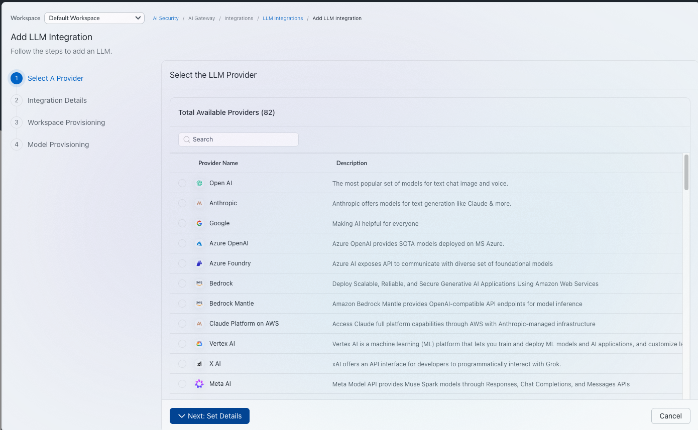
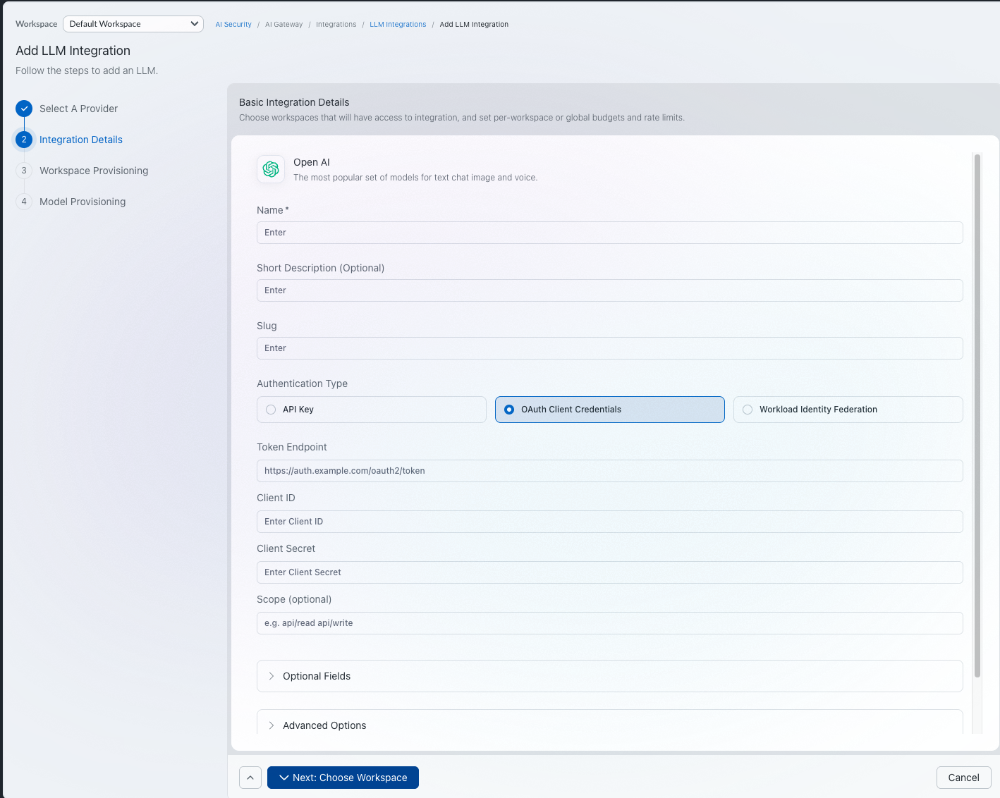
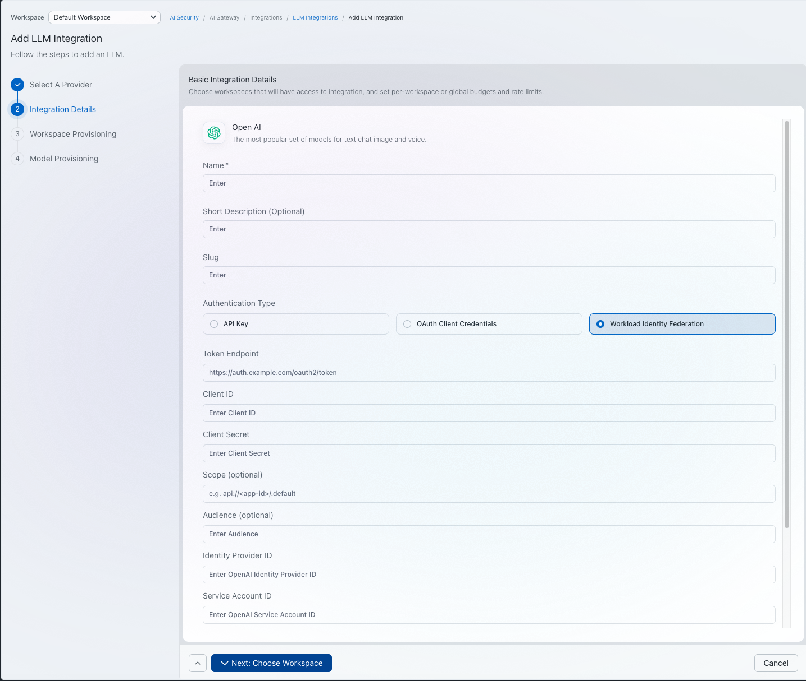

AI Gateway Provider Integrations
Connecting the gateway to a model provider, from the credential you collect in the provider console through to a verified first call, with one guide per provider and one page per authentication path
What this covers
Each guide in this set takes one model provider and walks the whole connection: which credential the provider issues, where in the provider console it comes from, what the gateway asks for, and how to prove the connection works. The guides are written to be followed in a work session with the customer, with the provider console open in one tab and Strata Cloud Manager in the other.
Every provider here supports more than one way to authenticate. The guides treat each one as a separate path with its own prerequisites and its own steps, because the choice is rarely reversible once applications are pointed at the slug.
Each guide here is complete on its own. The steps that are the same for every provider, workspace provisioning and the model list, appear in full on every provider page, generated from one shared source so the copies cannot drift. Nothing in this set asks you to finish a step somewhere else and come back.
Chapter 9 of the configuration set walks the same wizard once, without a provider in front of it, and adds the governance material: the three tabs, the workspace-created integrations path, and how the three limit levels interact. Read it for the wider picture, not to complete anything here.
The model provider prerequisites page is the pre-engagement checklist. It tells a consultant what to ask the customer to collect before the session starts. These guides are what happens during the session.
The Add LLM Integration wizard
Every provider goes through the same four-step wizard. Reach it from AI Security, then AI Gateway, then Integrations, then LLM Integrations, then Add LLM Integration. A workspace selector sits above the breadcrumb.
| Step | What it asks for | Covered by |
|---|---|---|
| 1. Select A Provider | One provider from the catalog. The tenant lists 82. | This page, then the provider guide |
| 2. Integration Details | Name, description, slug, and the authentication type with its fields. | The provider guide, one section per path |
| 3. Workspace Provisioning | Which workspaces get the integration, and their budgets and rate limits. | Configuration chapter 9 |
| 4. Model Provisioning | Which models the integration exposes. | Configuration chapter 9 |
Step 1 lists every provider the tenant supports:

Bedrock, Bedrock Mantle and Claude Platform on AWS all reach Claude models on AWS, and they are three different tiles with three different configurations. Google and Vertex AI both reach Gemini. Confirm which product the customer has bought before picking a tile, because the configuration does not transfer between them.
Authentication paths
Step 2 of the wizard carries an Authentication Type control. For OpenAI it renders as three cards: API Key, OAuth Client Credentials and Workload Identity Federation. API Key is selected by default, and the fields below the control change with the selection.
The same step, with each of the three paths selected:



There is no single control. Each provider names its own, places it directly below Slug, and offers a different number of options. The counts run three, two, four and five. Every row below was read from a live tenant on 17 November 2026.
| Provider | Control label | Options, in the order the console lists them |
|---|---|---|
| OpenAI | Authentication Type |
API Key, OAuth Client Credentials, Workload Identity Federation |
| Anthropic | Authentication Type |
API Key, Workload Identity Federation |
| Azure OpenAI | Azure Authentication Mode |
Default, Managed, Azure Entra, Workload Identity |
| Azure Foundry | Azure Authentication Mode |
Default, Managed, Azure Entra, Workload Identity |
| AWS Bedrock | AWS Auth Type |
AWS Access Key, AWS Assumed Role, AWS Service Role, API Key, OAuth Client Credentials |
The two Azure tiles share a control and a set of credential modes, and they differ in how the endpoint and the deployments are described. That difference decides which tile a customer needs.
| Azure OpenAI | Azure Foundry | |
|---|---|---|
| Endpoint field | Azure Resource Name, the first label of the host | Azure Target URI, a full URL |
| Deployments | A Foundation Model block holding many entries, each with its own API version and one marked default | One optional Azure Deployment Name, with a single Azure API Version for the integration |
| Model picker | Select Azure Foundation Model | None |
Azure OpenAI carries many deployments inside a single integration. Azure Foundry has one optional deployment name and one API version, so a customer running several Foundry deployments needs either several integrations or callers that name the deployment themselves. Plan the slug convention around that before creating the first one.
The product documentation states that Workload Identity Federation is supported for OpenAI and Anthropic only. Azure OpenAI has a Workload Identity mode and Bedrock has OAuth Client Credentials, so the documented limit does not hold. Where this site and the vendor documentation disagree, the tenant is the higher authority.
Do not rule federation out for a provider because the documentation omits it, and do not assume a provider offers a path because another provider does. Anthropic, for example, has no OAuth client credentials option at all.
The word covers three unrelated mechanisms in this product, and a configuration for one is useless for another.
- Token exchange — OpenAI and Anthropic. Your identity provider issues a JWT, the gateway exchanges it with the provider. Needs a token endpoint, a client ID and secret, and provider-side identifiers.
- Azure AD workload identity — the Azure OpenAI
Workload Identitymode. A client ID and a tenant ID only. No token endpoint exists, because the Azure compute the gateway runs on supplies the identity. - Cloud compute roles — the Bedrock
AWS Service Rolemode and the AzureManagedmode. No credential field at all. The gateway inherits the role of the machine it runs on.
The second and third require a self-hosted gateway, because a hosted gateway does not run on your compute.
Which path to use
The paths differ in what the gateway stores, what rotation costs, and how quickly access can be withdrawn. Those three questions usually settle the choice.
| Path | What the gateway stores | Rotation | Revocation |
|---|---|---|---|
| API key | The provider key itself, encrypted, or a reference to it in your vault | Manual, on whatever schedule you enforce. A vault reference makes this a vault operation rather than a gateway operation. | Delete the key in the provider console |
| OAuth client credentials | A client ID and a client secret for the token endpoint | Manual, but the secret is yours rather than the provider's | Rotate or disable the client in the identity provider |
| Workload Identity Federation | A client ID and secret for your own identity provider. No provider key exists. | The provider token is short-lived and refreshed automatically. Only the identity provider secret needs rotating. | Disable the mapping or rule. Cached tokens expire within 15 minutes. |
| Cloud-native identity | A role ARN or nothing at all, depending on the cloud | No secret to rotate | Detach the policy or delete the role |
Federation removes a stored secret, and it adds an identity provider, a provider-side mapping and a second token exchange to everything that can break. A customer without an existing OIDC identity provider will spend the first session building one. Where the key can live in a vault and rotate on a schedule, the API key path reaches a reasonable position with far less to maintain. Choose federation when the security requirement names it, not by default.
The guides
The five provider guides below cover how the gateway authenticates to a provider. That is one half of the path. Identity and client configuration covers the other half: what credential the calling application holds, how a user is identified, and what the provider sees when an entire organization shares one integration credential. A reader who skips it tends to assume each user reaches the provider as themselves, which is not what happens.
The two credentials in every request, what the model provider actually sees, how a caller is identified to the gateway by workspace key or by validated JWT claims, the three values an application changes to route through the gateway, and what happens to provider-side rate limits when hundreds of users share one integration credential.
The reference implementation for all three paths, and the only provider captured end to end in a tenant. Covers the platform API key and where the optional Organization ID and Project ID change cost attribution, the client credentials fields, and the full federation setup against Entra ID and Okta including the OpenAI Workload Identity Provider and its service account mapping.
The narrowest tile of the four. The console API key, and the federation path, which differs from OpenAI's in both shape and failure mode. Anthropic uses a JWT bearer grant rather than a token exchange, needs a federation issuer and a federation rule rather than a provider and a mapping, and has two settings that reject a working configuration outright: the maximum JWT lifetime against Entra tokens, and replay protection against Okta tokens.
The resource name, the Foundation Model block where deployment entries and their API versions live, and all four modes. Default is the API key. Managed and Workload Identity both need the gateway to run on Azure compute. Covers the role assignment that the other providers have no equivalent for, and the deployment name against model name distinction that breaks the first call when it is missed.
All five AWS auth types and the region that every one of them needs. Covers the permission policy, the trust policy with the published principal ARN for the hosted gateway, the external ID, and cost attribution through STS session tags for customers sharing one role across several applications. AWS Service Role takes no credential at all, which makes it the strongest option on a self-hosted gateway.
Not yet verified in a tenant
Every credential form in this set is captured from a live tenant, so the mode names and the field lists are observed rather than inferred. What remains open is mostly behind collapsed panels that were never expanded. Each provider guide repeats the items that apply to it.
- The contents of Advanced Options, on every tile. The panel appears on all four and was never expanded.
- The contents of OpenAI's Optional Fields, which is where the Organization ID and Project ID most likely live. The panel is not universal: Azure OpenAI and Bedrock do not have one.
- What Alias Name does in the Azure OpenAI Foundation Model block. If it lets a caller use a friendly name instead of the deployment name, it would soften the deployment name trap, but that is not confirmed.
- What the Use Entra Federated Authentication checkbox changes in the Azure OpenAI
Azure Entramode. - The AWS-side setup for the Bedrock
OAuth Client Credentialsmode. The product documentation does not describe this path at all, so what the token endpoint should point at is unknown. - The fields below the visible fold on the Anthropic federation form, where the documented Service Account ID and Workspace ID are expected.
- What the Grab API Key link beside the API Key field does.
- Whether the Endpoint Type field, documented as Public or Private, still exists. It is not visible on any captured form.
Outside this set
- The other 78 providers. This set covers the four most commonly requested. The wizard is the same for the rest, and the authentication path matrix above is the part that changes.
- Workspace and model provisioning. Steps 3 and 4 of the wizard are provider-agnostic and belong to configuration chapter 9.
- Vault storage for the credential. Pointing a credential field at AWS Secrets Manager, Azure Key Vault or HashiCorp Vault is configuration chapter 3, and LLM API key management covers building the vault in the first place.
- Pointing applications at the gateway. The client applications guide covers which tools can be routed and how.